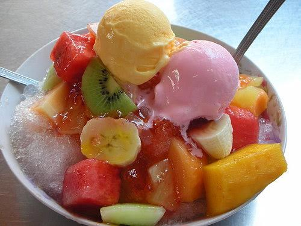

Home
English
中文
Tainan
Attractions
Delicacies
Festivals
Transportation
External Links/Sources
Tainan Attractions Blog
Tainan City Guide Website
Chimei Musuem Website
Taijiang National Park Website
Kaohsiung
Attractions
Delicacies
Festivals
Transportation
External Links/Sources
NSTM Website
Kaohsiung Rapid Transit Website
Pier Art Center Website
Kaohsiung City
Southern Taiwan
Delicacies
Tan Zuo Ma Li Grill
Category: Grill, Japanese cuisine, Barbecue
Address: No. 562:, Meishu E. 4th Rd., Gushan Dist, Kaohsiung, Taiwan.
Business hours: 11:30AM–12AM
Kaohsiung pópo bīng
Category: Ice Products, Dessert
Address: No. 135, Qixian 3rd Rd, Yancheng District, Kaohsiung City, 803.
Business hours: 9AM–12AM

Xià kēng Soybean Pudding
Category: Dessert, Soybean Pudding
Address: No. 166, Zhongxiao Rd, Alian District, Kaohsiung City, 821
Business hours: 8:00AM-11:00PM